Okay, let's break down this Dynamics 365 Finance scenario and figure out what the question is really getting at.
So, we have a client with a bunch of different legal entities, all managed within Dynamics 365 Finance. They're currently handling their financial consolidation and eliminations – basically, merging financial data from all those entities and getting rid of intercompany transactions – using some external reporting tool. Their goal is to ditch that external tool and do everything within Dynamics 365 Finance itself.
The question is asking us to evaluate a potential solution within the context of Dynamics 365 Finance. Specifically, it wants to know if a particular method of consolidation and elimination will successfully meet the client's needs. In order to meet the client's needs, the solution needs to allow the client to consolidate their financial data and eliminate intercompany transactions all within Dynamics 365 Finance, without using their old reporting tool.
The terms "consolidation" and "eliminations" are key here. "Consolidation," in this context, is like taking the financial statements from each of the client's legal entities and combining them into one overall financial picture. "Eliminations" are about removing transactions that happened between those entities – for example, if one entity sold something to another, that transaction needs to be removed during consolidation to avoid counting it twice in the overall financials.
The proposed solution suggests using the "Consolidate online" feature in Dynamics 365 Finance. It also mentions including eliminations "during the process or as a proposal" and setting up the transactions to post in the legal entity that is configured for the consolidations. That sounds like we are going to consolidate all the legal entities into a single "consolidation company."
Now, let's see if this solution actually works.
The "Consolidate online" function in Dynamics 365 Finance is indeed designed for consolidating financial data from multiple legal entities into one. By choosing to include eliminations during the consolidation process, or as a proposal, we're ensuring that those intercompany transactions are correctly handled. Setting up elimination transactions to post in the consolidation legal entity helps keep a record of these adjustments and maintain accuracy. Therefore, the proposed solution of using "Consolidate online", including eliminations, and posting them to the consolidation legal entity should work perfectly for meeting the client's goal of consolidating within Dynamics 365 Finance.
So the answer is Yes.
Okay, so we've got a scenario here where a company is using Dynamics 365 Finance and they want to handle their financial consolidations and eliminations right within the system. They have a bunch of different legal entities all set up in Dynamics 365 Finance, but right now they're using a different tool for reporting. The question is asking if selecting "Consolidate with import" is the right way to make this happen.
Let's break down what this means. "Consolidation," in the financial world, is about combining the financial results of different parts of a company (in this case, the legal entities) into one unified financial report. It's like taking the financial puzzles of each entity and putting them together to see the big picture of the whole company's performance. "Eliminations" are a crucial part of this process. They're about removing transactions that happen between these different legal entities within the same company. For example, if one legal entity sold something to another entity within the same company, you'd eliminate that transaction in the consolidated report to avoid counting it twice and get a true picture of the company's overall financial activity.
Now, Dynamics 365 Finance offers a few ways to do consolidations. One way is "Consolidate online," which is great when all your legal entities are in the same database. Another is "Consolidate with import," which is used when you have data coming from different systems or databases, or even from outside of Dynamics 365. This option means you're bringing in data from somewhere else, preparing it, and then consolidating it within Dynamics 365 Finance.
In this scenario, the company's legal entities are all in the same Dynamics 365 Finance system. This means they're all in the same database, which makes things a bit simpler. The suggestion is to use "Consolidate with import," but this approach is really meant for situations where the data is spread across different systems, not when it's all neatly tucked within the same Dynamics 365 Finance instance.
Considering that all the company's legal entities and their data are already inside Dynamics 365 Finance, using "Consolidate with import" would be like taking a detour. It would involve exporting data out of Dynamics 365, only to import it right back in, which is unnecessary and inefficient. The more direct and logical approach would be to use "Consolidate online" because it's designed for exactly this kind of situation – where everything is within the same system.
Therefore, the solution proposed, "Consolidate with import," does not meet the goal in the most efficient way. The correct answer is No.
Okay, let's break down this scenario and the question being posed.
We're talking about a client who's using Dynamics 365 Finance for their various legal entities. Think of these entities as different branches or divisions of a larger company, each with its own set of books. Right now, they're using some other software to do their financial consolidation – that is, combining the financial data of all these entities into one big picture. They also use this other tool to handle eliminations, which is a crucial part of consolidation.
What are eliminations? Imagine one entity in the group sells something to another entity in the same group. In the individual books, that's a sale and a purchase. But when you look at the company as a whole, it's just moving stuff around internally, it is not a true sale to an outside customer. Eliminations get rid of these internal transactions so the consolidated financials reflect only what's happening with the outside world.
Now, the client wants to ditch their separate reporting tool and do everything, including consolidation and eliminations, within Dynamics 365 Finance. That makes sense – it's generally better to have everything in one system if you can.
The question asks if a particular solution will meet this goal. The proposed solution is to create a new, separate company within Dynamics 365 Finance just for eliminations. In this company, you'd manually create the elimination entries. Then, you'd use this special company either when running financial reports or during the consolidation process itself.
So, the core of the question is: will creating a dedicated company for manual eliminations and using it in reporting or consolidation in Dynamics 365 Finance allow the client to perform their financial consolidation and eliminations in the system?
The answer is yes. This solution does meet the goal. By creating a separate company specifically for eliminations, you can manually record all necessary elimination entries. This dedicated company ensures that intercompany transactions are properly removed, and using it in the consolidation process or financial reporting will result in an accurate consolidated financial view. While there might be other ways to handle eliminations in Dynamics 365 Finance, manually creating them in a separate company is a valid approach to achieve the desired outcome of consolidating financials within the system and eliminating intercompany transactions.
Okay, let's break down this question about using Dynamics 365 Finance for financial consolidations and eliminations.
The core of the question revolves around a company that's already using Dynamics 365 Finance for multiple legal entities, but they're handling their financial reporting consolidation—basically, combining the financials of all those entities into one unified report—and eliminations (which is getting rid of transactions that happen between those entities so you're not counting the same money twice) in a different tool. The goal is to figure out how to do this whole process directly within Dynamics 365 Finance, which makes sense because it would streamline things.
Now, the question asks if a specific solution will do the trick. That solution suggests setting up "Elimination rules" and then running an "elimination proposal." It adds that these rules should be configured to post to any company that is marked as "Use for financial elimination process" in their setup within Dynamics 365 Finance. Essentially, this is saying, "Set up rules to identify transactions that need to be eliminated, let the system figure it out, and then make sure those elimination entries are posted to the right companies."
So, will this work? It absolutely will. Setting up elimination rules is the standard way to automate the process of identifying intercompany transactions that need to be removed during consolidation. Running an elimination proposal is the next logical step - it's like telling the system, "Okay, based on those rules, go ahead and find all the transactions that need to be eliminated and create the journal entries to do so." This is the standard and correct method for performing eliminations in D365.
And the part about configuring the rules to post to companies marked for the financial elimination process is key. That "Use for financial elimination process" flag is basically how you tell Dynamics 365 Finance which legal entities are involved in the elimination process. By doing this, you ensure that the elimination entries are recorded correctly and that your consolidated financials are accurate.
Therefore, the proposed solution is spot on. It leverages the built-in features of Dynamics 365 Finance in the correct sequence to achieve the desired outcome. The solution meets the goal, so the answer is Yes.
Let's break down this drag-and-drop question. It's essentially asking for the correct sequence of steps to set up a "derived financial hierarchy" within a public sector organization's system. This setup is geared towards analyzing posted transaction data and ultimately generating an outgoing electronic document. The "derived financial hierarchy" is a crucial concept here, and it sounds like a structured way to categorize and organize financial data. The whole context points towards a process, likely within some sort of financial management software, that requires specific actions to be carried out in a particular order. It isn't just about doing the tasks, but doing them in a way that makes logical sense for the system to work properly. There are some key terms and ideas mentioned in the options:
Now that we've unpacked the question and its core components, let's walk through the process of figuring out the order of actions, much like how the system would expect them to be performed.
So, the correct order of actions is to create the hierarchy first, then define its type, associate it with a legal entity, and finally set up and activate the filters. This logical sequence builds the derived financial hierarchy step by step, ensuring that each action has a foundation built by the previous one. It's a bit like constructing a building: you need the foundation before the walls, and the walls before the roof. Each step relies on the one before it to make sense.
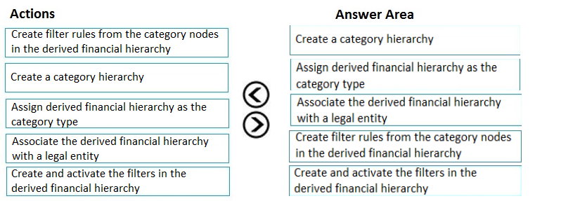
Okay, let's break down this question about setting up currency exchange rates for a company dealing with foreign invoices. It sounds like we're in the realm of accounting or finance software, maybe an ERP system or something similar.
The core issue here is how to accurately convert the amounts on these invoices from foreign currencies into the company's base currency (the currency they primarily operate in and report financials in). To do this, the system needs up-to-date exchange rates. The question wants to know the right steps to get these rates into the system.
Now, the options mention a few key concepts:
So, what are we really trying to figure out? We want to know the practical, user-level steps to configure the system to pull in and use exchange rates. We're not being asked about the deep technical details of how the data is formatted (HTML/XML).
Now that we understand the question, let's address the correct approach.
The most logical and user-friendly way to handle this is to first set up the system to connect to the desired exchange rate providers. This usually involves selecting the provider from a list within the software and potentially entering some configuration details, like an API key if required.
Once the provider is configured, you would define the exchange rate types you need. This is essentially telling the system what kinds of rates to fetch and how to label them within the system.
Finally, with both providers and rate types set up, you can either manually import the rates or, more commonly, set up an automated process that regularly pulls in the latest rates from the providers.
Therefore, the correct approach is to configure the exchange rate provider, create the exchange rate type, and then import the currency exchange rates. This allows your system to get the right data from the right source and use it in the way your company needs for its financial operations. The other options involving HTML/XML key values and developer intervention are not typically part of the standard user workflow for configuring exchange rates in most modern accounting or ERP systems.
Okay, so we have a situation where users are messing up their entries in Dynamics 365 Finance by posting project and bank transactions incorrectly in the General Journal, and the client, understandably, wants to stop this from happening. The goal is to set up Dynamics 365 Finance so that only ledger-type transactions can be entered in the General Journal. This means we need to understand what the General Journal is typically used for and why allowing only "ledger" type transactions makes sense in this context.
The General Journal is like a main record-keeping hub in accounting. It's where you initially record financial transactions in chronological order before they're posted to specific ledger accounts. Now, "ledger" type transactions typically involve entries that directly affect the main accounting records, like recording revenue, expenses, assets, or liabilities. Think of it as the core financial data that makes up the balance sheet and income statement. Project transactions, on the other hand, often relate to specific projects and might be tracked separately, while bank transactions usually involve cash movements that might be reconciled differently. So, by restricting the General Journal to only "ledger" type transactions, we're essentially ensuring that this journal remains focused on the core financial accounting entries, avoiding clutter and potential errors from other types of transactions that might be better handled elsewhere.
Now that we have a pretty good grasp of the issue and why it needs to be solved, let's figure out how to configure Dynamics 365 Finance to achieve this. We need to make sure only "ledger" account types can be used in the General Journal.
The correct approach is to use journal control. Journal control is like setting up specific rules for each type of journal. You can define exactly which types of accounts are allowed to be used in the journal, and which are restricted. In our case, we want to go into the journal control settings for the General Journal and specify that only "ledger" type accounts are valid for both the main account and the offset account. This way, whenever someone tries to create an entry in the General Journal, the system will check if they're using a ledger type account. If they try to use a project or bank account, the system will give them an error and prevent the posting. This will effectively solve the client's problem by ensuring that only the correct types of transactions are recorded in the General Journal.
The other options are not suitable for the required task. Advanced ledger entries are meant for handling specific types of complex transactions and are not used to limit the account types for the general journal. Configuring the voucher series won't achieve this either, as it's mainly about setting up number sequences for the vouchers. And while creating a journal template with "ledger" as the account type and offset account type might seem helpful, it is not enforced. Users can change the account type in the actual journal entry. This will limit the account type but it will not prevent the user from changing the account type.
Therefore, using journal control to define valid account types is the most effective and direct way to prevent users from posting incorrect transaction types in the General Journal.
Okay, so we're putting on our functional consultant hats for Contoso Entertainment System USA, and we're dealing with cash receipts, specifically in US dollars. Let's break down what this question is really asking us to do.
Essentially, we need to set up a specific kind of journal within Dynamics 365. Think of a journal like a detailed logbook where financial transactions are recorded. In this case, it's a "cash receipts journal," which, as the name implies, is specifically for recording money coming into the company. Our focus is on transactions happening in US dollars (USD), meaning we want to track all the cash payments Contoso receives that are made in this currency.
Now, why is this important? Well, imagine a company dealing with multiple currencies – Euros, Yen, and so on. It would be chaos to lump all those transactions together without distinguishing the currency, especially at the point when customers are paying us with cash. Having a dedicated USD cash receipts journal helps keep things organized and ensures that financial records are accurate and reflect the correct currency used in each transaction. It also helps later on with tasks like bank reconciliation, financial reporting, and auditing.
The question explicitly mentions using the USMF legal entity, which stands for Contoso Entertainment System USA. Legal entities are a core concept in Dynamics 365, representing separate, distinct companies or divisions within a larger organization. In this case, USMF is the specific entity within Contoso that we're dealing with. We need to ensure that the cash receipts journal we create is associated with this particular entity so that the financial transactions are recorded in the correct context.
Dynamics 365 is a powerful enterprise resource planning (ERP) system, and within it, there are specific modules and tools for managing financial transactions like cash receipts. To create our USD cash receipts journal, we'll need to navigate through these modules and use the appropriate settings and configurations.
So, in essence, the task is about precision and organization. We're not just recording cash coming in; we're creating a structured and clearly defined system within Dynamics 365 to track USD cash receipts for a specific legal entity, Contoso Entertainment System USA (USMF). This ensures financial accuracy and provides a clear picture of the company's cash flow in US dollars.
Alright, now that we have a solid understanding of what the question entails, let's dive into how we'd actually do this in Dynamics 365.
First, we'll log into the Dynamics 365 portal using our credentials. Once we're in, we need to navigate to the "General ledger" module. This is where all the financial magic happens, including the management of journals.
From there, we'll head over to "Journal setup" and then "Journal names." This is where we can create new journal names or modify existing ones. Since we need a specific journal for USD cash receipts, we'll create a new one. We'll give it a clear and descriptive name like "US Dollar Cash Receipts," so it's easily identifiable later on. We'll then specify the journal type as "Customer payment".
The crucial step is to make sure we set the currency to "USD." This tells Dynamics 365 that this journal is exclusively for transactions in US dollars.
Finally, we need to link this journal name to the USMF legal entity. There's usually a section where we can select the legal entities associated with a particular journal name. We'll make sure to check the box next to USMF, associating our newly created USD cash receipts journal with Contoso Entertainment System USA.
Once we save these settings, we'll have a dedicated cash receipts journal for US dollars within the USMF legal entity. Now, whenever a cash payment is received in USD, it can be recorded in this journal, ensuring accurate and organized financial tracking. This helps ensure everything is accounted for correctly and makes financial reporting and analysis much smoother.
Okay, so we're diving into the world of Dynamics 365 Finance, specifically within the realm of fixed assets and currency conversion. Let's break down what this question is really asking us to do.
Essentially, we are role-playing as a functional consultant for a company called "Contoso Entertainment System USA" (which is a demo company often used in Dynamics 365 examples, so don't worry about its real-world existence), and it operates under the USMF legal entity, which is important to note later. Our mission is to ensure that when we're looking at the value of fixed assets (think things like buildings, machinery, or vehicles that the company owns and uses for its operations), we can also see that value reflected in a reporting currency, using a constant exchange rate. This is important because if Contoso has operations in multiple countries, they might buy assets in different currencies. However, for reporting and consolidation purposes, it's often required to show all assets' value in a single currency.
Now, the "constant exchange rate" part is crucial here. It means we're not going to be dealing with fluctuating daily exchange rates. Instead, we'll apply a fixed, unchanging rate for these calculations. This is typically done for consistency and to simplify the reporting process, especially when we want to look at trends or perform comparisons over time without the noise of daily rate changes.
The question is implicitly asking us to navigate through the Dynamics 365 Finance interface and find the specific settings or configurations where we can define this constant exchange rate for fixed asset reporting currency calculations. We'll need to know where to input the rate, how to link it to fixed assets, and how to ensure that it's being used for the reporting currency conversion.
Therefore, the core of the question is about understanding and demonstrating proficiency in Dynamics 365's fixed asset management and currency functionalities. It's not just about knowing that you can apply a constant exchange rate, but how to actually do it within the system.
Now that we have a solid grasp of the question, let's proceed to find out how to accomplish this task within Dynamics 365:
First, to make sure we are starting from the right place, let's change the company to the USMF legal entity. To do this, navigate to the company picker in the top right corner of the screen, and select "USMF" from the dropdown menu.
We will begin by going to the "Fixed assets" module. This is where all things related to managing fixed assets reside. Within that, we'll find a section called "Setup". This is where we define various parameters and settings for how we want to handle fixed assets in our system.
Inside "Setup," we're looking for "Fixed asset parameters". This is the place where you set up general rules and defaults for fixed assets. The parameters page will be presented with many tabs, however, we will focus on the "General" tab. It's usually the first one you see.
Within the general tab, we'll find a field or setting related to "Exchange rate type." This setting will determine the exchange rate type to be used for the reporting currency. Since we're told to use a constant currency exchange rate, we will select the "Fixed" exchange rate type. This will apply a constant currency exchange rate to calculate the reporting currency value of fixed assets.
Finally, we'll need to indicate that we want to use this exchange rate type for calculating the reporting currency. To do so, under the "Reporting currency amounts" group, ensure that the "Determine reporting currency exchange rate type" check box is selected. This will tell the system to use the exchange rate type we just set up.
And there we have it! We've successfully navigated through Dynamics 365 to apply a constant currency exchange rate for our fixed asset reporting currency calculations. We've essentially told the system, "Hey, whenever you're converting the value of our fixed assets to the reporting currency, use this fixed exchange rate instead of the daily fluctuating ones." Now, whenever Contoso generates reports or views data related to fixed assets, they'll see the values consistently converted to the reporting currency based on the fixed exchange rate we configured.
Okay, let's break down this scenario about setting up journal names for an organization. It sounds like they're aiming for a more organized and secure way of handling their financial journals. The core of what they're after is to use specific journal names, tailored for different purposes, to make processing these journals simpler and safer. This suggests a desire for both efficiency and security in their financial operations.
The question highlights several key requirements:
Essentially, the question is asking: Which elements within the journal name setup can help meet these specific requirements? We are given a few options like workflow approval, account type, journal type, default values, and journal control, and we need to pick the three that best address the organization's needs. It's like choosing the right tools from a toolbox to get a specific job done.
Now, let's consider how to address these needs using the given options.
The organization wants to streamline journal processing and enhance security, so let's take each one of these and consider which ones would fit the best.
Therefore, the three journal elements that should be configured are account type, journal type, and journal control, along with default values. These elements work together to create a framework for journal names that is both efficient and secure, ensuring that the organization's financial data is handled accurately and in compliance with internal controls.
Okay, let's break down this Dynamics 365 Finance question about journal controls. It looks like we're dealing with a scenario where we need to understand how a specific journal, particularly a "Payroll Journal," is set up and what restrictions or limitations are applied to it.
The screenshot shows us a journal control configuration. In the world of accounting and ERP systems like Dynamics 365, a journal is basically a record of financial transactions. Think of it like a detailed logbook where every transaction is documented before it gets posted to the general ledger, which is the main accounting record. Journal controls, as the name suggests, are rules or settings that dictate how these journals operate—who can use them, what types of accounts they can affect, and so on.
In this particular image, we see a journal named "Payroll," which, as you can guess, is likely used for recording payroll-related transactions (like salaries, deductions, taxes, etc.). The configuration has two main sections: "Which account types can be posted?" and "Which segment values are valid for this journal?".
The first section is straightforward. It shows that only "Ledger" type accounts can be posted to this journal. In accounting, a ledger account is a fundamental building block. It can be anything that can be included in a chart of accounts. It is an account used to store and manage the financial data of a business. It tracks the balance and transactions of specific assets, liabilities, equity, revenues, or expenses. In the context of Dynamics 365, the chart of accounts represents the organizational structure of how your finances are tracked.
The second section, "Which segment values are valid for this journal?", is a bit more intricate. It's talking about segments, which are essentially dimensions or categories used to further classify transactions. Here, we see that the journal is restricted to a specific company ("Contoso"), a particular account structure ("Manufacturing P&L"), and a segment called "Department" with values ranging from 022 to 027.
The account structure defines the format and components of account numbers used in the general ledger. Each account structure specifies the segments (or dimensions) that are used to create an account number. Account structures are used to define valid combinations.
Now, the segment "Department" likely refers to different departments within the Contoso company. And the "Manufacturing P&L" account structure probably means that this journal is related to the profit and loss accounts specifically for the manufacturing operations of Contoso. The range "022 to 027" would then correspond to specific department codes within that manufacturing context.
Now that we've dissected the setup, let's move on to the questions:
I hope this explanation feels clear and makes the concepts easy to grasp! Let me know if you have any more questions or want to dive deeper into any aspect.
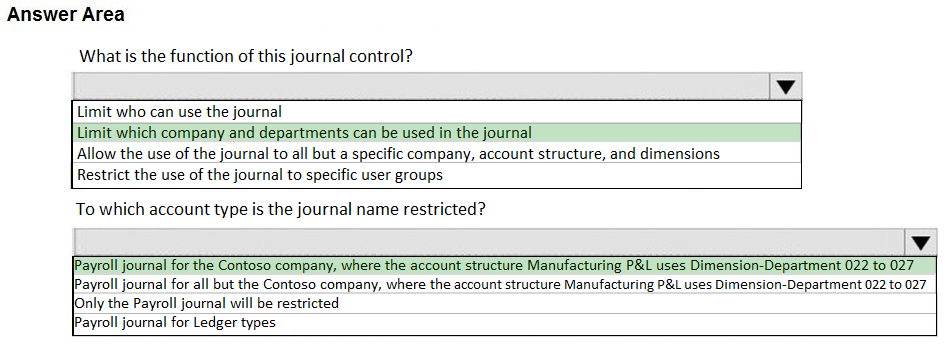
Okay, let's break down this question about financial dimension sets in what looks like a Dynamics 365 Finance or a similar ERP system environment. It seems like we're dealing with a scenario where someone has just set up a new way to categorize and analyze their financial data, and they're trying to figure out exactly how this setup will affect their reporting and data management.
So, first off, what's a "financial dimension set"? Imagine you're running a business, and you want to keep track of your expenses. You could just lump everything into one big "expenses" category, but that wouldn't be very helpful, right? You'd want to know where those expenses are coming from. That's where financial dimensions come in. They're like tags or labels you can attach to your transactions to categorize them. In this case, we have three dimensions: "Main Account," "Department," and "Project."
"Main Account" probably refers to the broad category of the transaction, like "Office Supplies" or "Salaries." "Department" could be something like "Sales," "Marketing," or "HR." And "Project" could be a specific initiative or task that the expense or revenue is related to, like "Website Redesign" or "Summer Marketing Campaign."
Now, a "financial dimension set" is simply a predefined combination of these dimensions. The screenshot shows that the user has created a set called "MA + DEPT + PROJ," which, as the name suggests, includes the Main Account, Department, and Project dimensions, in that particular order.
The question then presents us with a couple of multiple-choice scenarios. The first one asks us to identify a true statement about this newly created dimension set. The options relate to whether the dimensions are correctly selected and ordered, the order in which the dimensions will appear in reports, and whether the set is ready for reporting.
The second question seems to be about the initial setup of balances within this dimension set. It asks what options are available when creating these balances, with the choices being "Enter balances" and "Rebuild balances."
These kinds of questions are typical when you're setting up a financial system. You need to understand not only how to create these structures but also what implications they have for the rest of the system. For instance, the order of dimensions can matter for reporting and analysis. The options for setting up initial balances are crucial for ensuring data accuracy from the get-go.
Now that we've unpacked what the question is really getting at, let's look at how we can answer it.
We see that the selected financial dimensions in the set named "MA+DEPT+PROJ" are MainAccount, Departments, and Project. The order in which they are presented in the "Selected Financial Dimensions" box determines the order in which they will be applied to transactions and displayed in reports. It's important to understand that this order is from top to bottom, which will affect how data is aggregated and filtered in various financial reports.
Regarding the options available when creating balances for a dimension set, the initial action usually involves entering balances. This step is where you input the starting financial data associated with the dimensions. "Rebuild balances" is typically used after the initial setup, such as when there are changes or corrections to the transactional data that need to be reflected in the aggregated balances.
Therefore, the correct statement about the newly created dimension set is that the named dimensions are selected and in the correct order, which is crucial for ensuring that reports accurately reflect the financial structure of the organization. For the second question, the option available when balances are initially created is to "Enter balances," allowing you to set the foundational financial data for your dimension set.
So, the first question should have "The named dimensions are selected and in the correct order" as the answer.
The second question should have "Enter balances" as the answer.
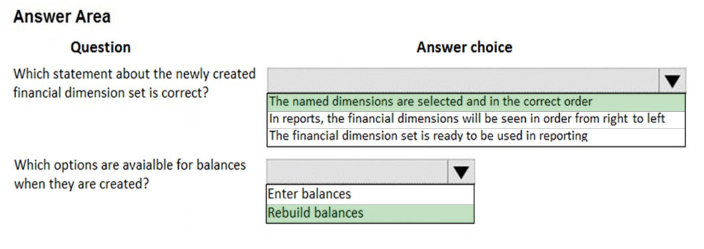
Let's break down this drag-and-drop question about Dynamics 365 Finance and foreign currency revaluation.
The scenario is pretty straightforward: a client has invoices in multiple currencies, and it's time to do a month-end process called "foreign currency revaluation." This process is basically about figuring out the current value of those invoices in the company's main currency, considering how exchange rates have changed. This is important because it gives the company a true sense of how much money they actually owe (their "currency exposure").
The question is asking for the correct sequence of steps to set up Dynamics 365 Finance to do this revaluation. We're given four actions and need to put them in the right order. They also say there could be more than one right answer, which is interesting!
Here are the four actions we have:
Now that we understand what the question is about and what each action entails, we can easily figure out the possible sequences of actions to make this foreign currency revaluation happen:
One logical order starts with the initial setup: enabling foreign currency revaluation on the main account setup form and specifying the exchange rate type. Then, since this is specifically about Accounts Payable, you'd go to the Accounts Payable module, choose the foreign currency revaluation task, set your parameters, and run it. After that, you might want to check the results in the preview form and then post the revaluation. Finally, you could also run a revaluation from the General Ledger module, selecting specific accounts (excluding Accounts Payable since it was already done) and previewing before posting.
Another equally valid sequence would be to start with the same setup step. But then, you could first do the General Ledger module's revaluation process, focusing on accounts other than Accounts Payable. After that, you'd move to the Accounts Payable module, run the revaluation there, and finally review and post the results using the preview form.
So, both of these sequences make sense and would achieve the desired outcome. The key is to start with the configuration and then perform the revaluations, either in Accounts Payable first or General Ledger first, and finally review and post.
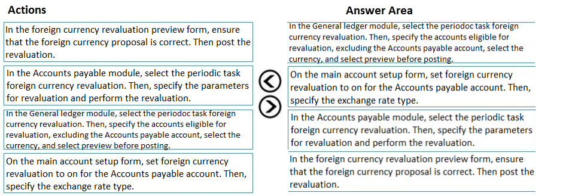
Let's break down this question about vendor invoices and journal types in a business accounting context.
The core of the question revolves around understanding how a company should properly record financial transactions related to paying vendors for the components they provide. In accounting, journals are used to keep a chronological record of a company's financial activities. Different "journal types" are used to categorize and track different kinds of transactions.
The question tells us that the company hasn't set up its accounting system to handle vendor invoices correctly, which is a problem because vendor invoices are a crucial part of tracking expenses and managing accounts payable. We're being asked to figure out which specific journal types need to be configured to solve this issue. Essentially, we need to match the right kind of journal to the task of recording vendor invoices. The image provided in the question is a visual aid that shows a list of different business purposes, like calculating costs or submitting payments, and we need to find the right journal type associated with vendor invoices.
Now, considering the context, vendor invoices generally involve recording the receipt of goods or services from a vendor, acknowledging the obligation to pay, and eventually recording the payment itself. So, we need to look for journal types that relate to these activities.
Looking at the image and the provided options, the purposes that relate to vendor invoices are "Submit pay statements for payment" and "Post retail transactions."
When a company receives an invoice from a vendor, it needs a way to record that obligation. The "Vendor invoice recording" journal type is perfect for this, as it's specifically designed to document invoices received from vendors. This journal type is typically used to record the details of the invoice, such as the vendor's name, the amount owed, and the goods or services provided.
"Submit pay statements for payment" is directly related to managing and processing vendor invoices. It seems like the option related to vendor invoices should be "Vendor invoice pool".
Similarly, "Post retail transactions" deals with recording various transactions, including those related to vendor invoices. The most fitting option here is also "Vendor invoice recording".
So, for "Submit pay statements for payment," the best-fitting journal type is "Vendor invoice pool," and for "Post retail transactions," it is "Vendor invoice recording." These journal types are specifically designed to handle the complexities of vendor invoices, ensuring accurate and organized financial records.
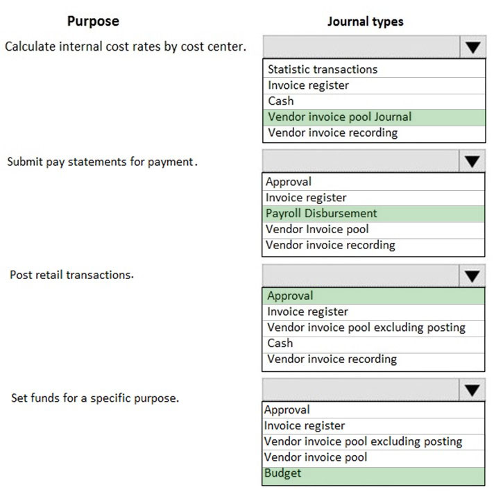
Okay, let's break down this Dynamics 365 Finance question together, focusing on the screenshot you've provided.
The question is all about setting up a "main account" within Dynamics 365 Finance. In accounting, a main account is essentially a record in the general ledger that's used to track and categorize financial transactions. Think of it as a specific bucket where you put similar types of transactions, like "sales revenue," "rent expense," or "cash." Dynamics 365 Finance, being an enterprise resource planning (ERP) system, uses these main accounts to organize a company's financial data, generate reports, and ensure everything is in order for audits and financial analysis.
The screenshot shows a form for configuring a main account called "Moving Expense." There are various fields where specific settings are defined. These settings determine how the account behaves, what types of transactions it can handle, and how it fits into the overall financial structure of the organization.
The question is presented as a "Hotspot" with two separate questions, each with a set of answer choices. Each question refers to specific settings in the screenshot and our job is to select the correct answer based solely on the information displayed in the image. The first question asks about the configuration of the main account, and we need to figure out what's true based on the settings. The second question asks what field is required when creating a new main account, which means we need to identify a field that must be filled in.
Now, let's tackle these questions one by one.
For the first question, "What is true about the main account configuration?", we're given four options. The first option, "It is locked for direct journal entries," can be confirmed by looking at the "Do not allow manual entry" field, which is checked. This means the answer is correct. The second option, "It will only accept debit transactions", is indicated as correct since the "DB/CR default" is set to "Debit." The third option, "It will use the currency translation type Average to post foreign currency revaluation," is also correct, as the "Currency translation type" field is set to "Average." The final option, "It requires an additional financial dimension", is not supported by any information in the image. Therefore, based on our analysis, the correct answer to the first question is "It will use the currency translation type Average to post foreign currency revaluation".
Moving on to the second question, "Which field is required when you create a new main account?". The options provided are "Main account type," "DB/CR default," "Default currency," and "Financial reporting exchange rate." In Dynamics 365, certain fields are mandatory when setting up a new main account. These are typically marked with a red asterisk (*) or in this case are indicated by the fields that have already been filled in even though this appears to be a new account setup. We can see that the "Main account type" is set to "Expense." Therefore we can conclude that the "Main account type" field is required when creating a new main account.
So, there you have it. By carefully examining the screenshot and understanding the basic concepts of main accounts in Dynamics 365 Finance, we were able to deduce the correct answers to both questions.
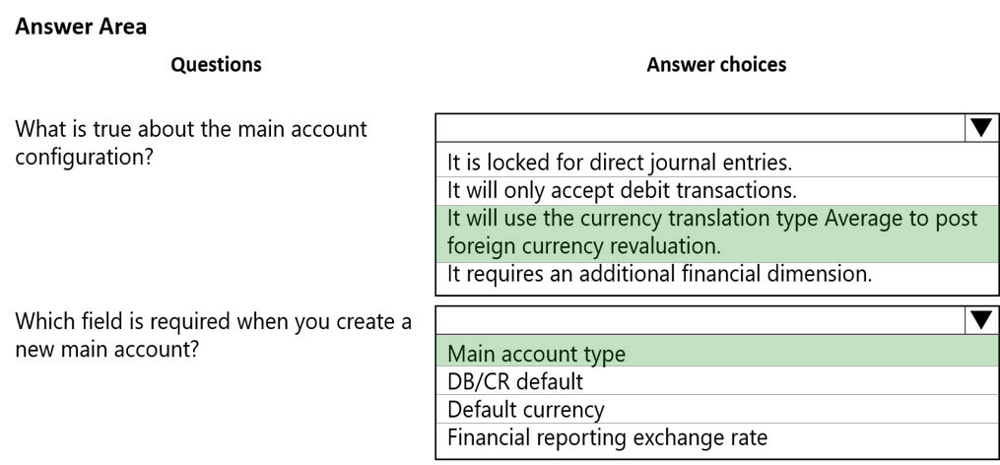
Let's break down this Dynamics 365 Finance question together. It looks like we're dealing with a scenario where a company is launching a new product and wants to track its profitability. They want to see how this profitability changes from month to month, specifically looking at each cost center's contribution, and they want to do all this within the cost control workspace in Dynamics 365.
The question is asking us to match up some "Options" with their corresponding "Requirements" in the system. The options seem to be related to cost accounting concepts, and the requirements are about the specific information the company wants to track. So, in essence, we need to figure out which cost accounting concept is needed for each piece of information they're after.
Let's clarify what each of the options means in the context of Dynamics 365:
Now let's consider the requirements:
Now, let's connect the dots and match the options to the requirements.
For "Month over month profitability," we need something that represents time. In the world of cost accounting, a "Statistical dimension" is often used to track numerical data that's not directly a cost. For example, you could set up a statistical dimension to track the "number of units sold" each month. The difference between months gives us our "month-over-month" tracking. Thus, "Statistical dimension" seems like the right fit here.
For the "New product," since this is the thing we are tracking costs for, it fits perfectly with the definition of a "Cost object." So we'll match "New product" with "Cost object."
Finally, "Cost center" represents the organizational unit where costs are being tracked. In this case, we want to track the profitability of the new product specifically within each cost center. Since this is what we are tracking costs by, this is also a cost object. So we'll match "Cost center" with "Cost object" as well.
Therefore, the correct matches are:
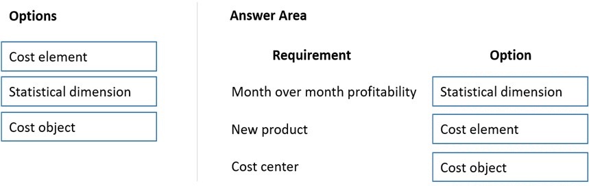
Okay, so let's break down this scenario and figure out what the question is really getting at.
We're talking about a system that deals with multiple currencies, and it needs to know the current exchange rates between them. Right now, someone is manually entering these exchange rates, which is a pain, and potentially inaccurate. The goal is to automate this process using the European Central Bank (ECB) as the source of truth for these exchange rates. Think of the ECB as the official authority on how much one currency is worth compared to another, at least within this system's context.
Essentially, we need to set up the system to automatically fetch and update the exchange rates from the ECB. The question wants us to pick out the two key steps, or configurations, needed to achieve this automation. It's like setting up a direct line of communication between our system and the ECB, so our system always has the latest, most accurate exchange rates without anyone having to lift a finger. The keywords here are "automation," "European Central Bank," and "exchange rates." We're not changing any currency values or creating new currencies, just making sure the exchange rates are correct and automatically updated.
Now, with that in mind, let's focus on the two options that help us achieve this automation:
First, we need to tell our system where to get the exchange rates from. This is where "configuring the exchange rate provider" comes into play. We're essentially pointing our system to the ECB and saying, "Hey, this is where you'll find the official exchange rates." It's like setting the source for the data.
Second, we need a way to actually pull that data from the ECB into our system. That's what the "run the import currency exchange rate process" does. This is the action that triggers the system to connect to the ECB, grab the latest exchange rates, and update its internal records. It is the mechanism that brings the data from the source into our system.
So, configuring the exchange rate provider sets the stage by defining the source, and running the import currency exchange rate process is the action that brings in the data. These two together create the automated system we're looking for. The other options, like "run currency revaluation," "create the currencies," and "configure dual currency," are about different aspects of currency management, but not directly related to automating the import of exchange rates from a specific provider like the ECB. They are about different functionalities that are not requested in this question.
Okay, let's break down this Dynamics 365 Finance scenario and figure out what the question is really asking.
Essentially, we have a client setting up their financial system. They've got one legal entity, which is like the overarching company structure. Within this, they have two departments (think of these like functional areas, such as sales or operations) and two divisions (which could be product lines or geographical regions, for example). These departments and divisions are set up as "financial dimensions" in Dynamics 365. Financial dimensions are just a fancy way to tag transactions with extra information so you can analyze your finances from different perspectives.
Now, the client has a specific rule: they only want these dimensions (departments and divisions) to be associated with expense accounts. This means when someone records an expense, they need to specify which department and division it belongs to. However, they absolutely do not want these dimensions to show up for balance sheet accounts (like assets, liabilities, and equity). Think of it like this, they do not want to record which department owns a specific asset.
The question is: will configuring one account structure for expense accounts and including applicable dimensions achieve the client's goal? The goal, remember, is to have dimensions show up only for expense accounts and never for balance sheet accounts.
The proposed solution suggests creating a single account structure specifically for expense accounts. This account structure would define which financial dimensions are relevant to those expenses.
This solution might seem incomplete at first, as the question mentioned that balance sheet accounts should not have any dimensions. By configuring a single account structure, we are only enabling the dimensions for the accounts specified in the structure. Therefore, the account structure will not include the balance sheet accounts, so it is implied that the dimensions will not be shown for the accounts that do not appear in the account structure. Therefore, we can conclude that the proposed solution will achieve the client's goal.
Therefore, the answer is yes.
Let's break down this scenario and figure out what's really being asked here.
The question revolves around creating a budget planning template in Excel that pulls data in real-time from Dynamics 365 Finance. In simpler terms, we're trying to make an Excel sheet that automatically updates with financial information from Dynamics 365. This is super useful for budget planning because it ensures you're always working with the most current data.
The core issue here is figuring out the sequence of steps needed to set up this template. The question provides a set of actions and asks us to pick the three most relevant ones and then arrange them in the order you'd perform them to achieve this integration.
Now, let's consider what each action implies:
Based on this understanding, it seems we need to create the template, connect it to Dynamics 365, and then perhaps use it. The manual data entry action feels irrelevant to this initial setup.
Considering the need for a dynamic link between Excel and Dynamics 365 Finance, the most logical sequence of actions is to first generate the template within the system, then add the data connector fields to establish that live connection, and finally, we can upload it.
Therefore, the sequence is:
First, you'd Generate the template. This likely involves using a feature within Dynamics 365 or Excel that's specifically designed for creating budget planning templates.
Second, you'd Add data connector fields. These fields are the magic ingredient that tells Excel where to pull the real-time data from Dynamics 365 Finance.
Third, you'd Upload the template. Now that the template is created and equipped with the necessary data connectors, you can upload it to the appropriate location within your system.
This order ensures that the template is properly set up to interact with Dynamics 365 Finance from the get-go, enabling real-time data flow for your budget planning.
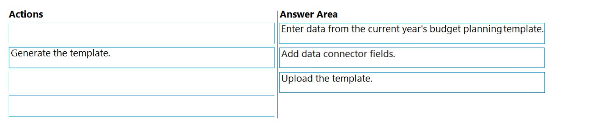
Okay, so we're diving into the world of cash flow reporting, specifically, how to set it up properly. The question is asking what steps you need to take to get these reports up and running. It's like asking, "What ingredients do I need to bake this cake?" but in a finance context. We're looking for the essential actions, the "must-dos," to make sure the cash flow reports are accurate and useful.
The question mentions "configuring cash flow reports." This is a pretty broad term, but essentially it means setting up the system so that it can correctly track and report the movement of cash within a company. This involves identifying where cash is coming from and where it's going. The question provides five possible actions that could help with this, but only three are correct and part of the solution. Each correct action will give us one point, so we need to carefully consider which actions truly contribute to setting up these reports.
There are some specific terms and concepts to consider here:
Now, with all that in mind, let's figure out the three key actions you would perform when configuring cash flow reports.
First, you absolutely need to identify and list all the liquidity accounts. This is fundamental because cash flow reports are all about tracking the movement of cash, and liquidity accounts are where your cash lives. Without knowing which accounts are considered "liquid," the system won't be able to track cash flow accurately. It is like telling someone to find the keys to the car but not telling them if they are inside the car or at home.
Second, you should configure the behavior for forecasts of transactions that affect the liquidity accounts of the company. Cash flow reports aren't just about what's happened in the past; they're also about predicting the future. Businesses need to anticipate future cash inflows and outflows, and configuring how the system handles these forecasts is crucial for creating accurate and useful cash flow projections. Forecasts of future transactions are a core element of a useful cash flow report, which is why this configuration is important.
Lastly, you need to run the cash flow calculation process. This is the step where the system takes all the data it has, including transactions in liquidity accounts and their forecasts, and uses it to create the actual cash flow report. Think of it as hitting the "bake" button on the oven after you've mixed all your ingredients. This will allow you to see the report.
So, there you have it. To configure cash flow reports effectively, you need to know your liquidity accounts, set up how you'll handle forecasts, and then run the process to generate the reports. The other options, defining the number sequence and configuring the account structure, while important for general financial setup, aren't directly essential for setting up cash flow reports specifically. Those actions are not as directly tied to the workings of the cash flow report itself, unlike the three actions we identified.
Okay, let's break down this question about configuring sales tax in Dynamics 365 Finance. It's asking us how to make sure that sales tax payable is consistently posted to the same set of accounts across all legal entities within the system.
Essentially, the core of this question is about uniformity and standardization of accounting practices across different parts of an organization that might be using D365 Finance. When a company operates in multiple regions or has several subsidiaries (legal entities), they often want to ensure that certain types of transactions are recorded in the same way, no matter where they occur. This makes financial reporting and analysis much easier and more consistent. In this case, the focus is on sales tax payable which, as you would understand, is the amount of sales tax a company has collected from customers but hasn't yet remitted to the tax authorities. It's a liability on the balance sheet, and keeping track of it accurately is super important.
The question is also touching on the capabilities of Dynamics 365 Finance, a powerful enterprise resource planning (ERP) system. It has features that allow companies to tailor their financial processes, including how sales tax is handled. So, we're looking for a specific feature or setting within D365 Finance that helps achieve this consistent posting of sales tax payable.
Now, let's look at the terms in the answer choices to understand what they mean in this context. A posting group is a way to map transactions to specific ledger accounts. Tax jurisdiction refers to the specific geographical area and its tax laws. The use tax payable account is for tracking tax due on items purchased for use, not resale. Finally, a sales tax group is a way to categorize items or customers for tax calculation purposes.
With all of that said, we are looking for a feature that focuses on how and where transactions are posted, not on how they are calculated. The correct answer is posting group.
Posting groups are designed precisely for this kind of scenario. In Dynamics 365 Finance, you can define posting groups to link specific types of transactions (like sales tax payable) to designated ledger accounts. And the beauty of it is that you can use the same posting groups across different legal entities. This ensures that no matter where a transaction occurs, the sales tax payable portion will always end up in the right accounts. This setup really helps in maintaining consistent financial records and makes reporting much simpler across an organization with multiple legal entities. It is a great way to make sure that sales tax is handled consistently from an accounting perspective.
Okay, let's break down this Dynamics 365 Finance scenario. It looks like we're dealing with a multi-company setup, and we need to figure out the right currencies for each company's ledger. Essentially, the question is asking us to match the correct currency type from a given list (USD, CAD, GBP) to the specific accounting needs of two companies (Company A and Company B) based on information provided in a table.
The table tells us a bit about each company: where they are located, their role in the overall structure, and what currency they primarily use. The terms "reporting currency" and "accounting currency" are key here. These are standard accounting terms, and while they might seem similar, they have distinct meanings within Dynamics 365.
Now, why is this important? Well, in a system like Dynamics 365 Finance, a company can operate in multiple currencies, but it needs to have one main currency for its internal accounting (accounting currency) and may also need a separate one for external reporting (reporting currency).
The question gives us three currency options: USD (US Dollar), CAD (Canadian Dollar), and GBP (British Pound Sterling). We need to correctly assign one of these to Company A's reporting currency and another to Company B's accounting currency, dragging and dropping our choices into the designated answer spaces.
With this understanding, we can now look at the information provided and make the correct matches.
Let's start with Company A. The table indicates that Company A is the main office, located in Canada, and uses the Canadian Dollar. Since it's the main office, its reporting currency would logically be the same as its local currency. Therefore, Company A's reporting currency should be CAD.
Next, let's consider Company B. The table tells us that Company B includes the headquarters and is located in the United States, using the United States Dollar. The accounting currency is the currency in which a company maintains its books. Given that Company B is based in the US and operates in USD, it's safe to assume that its accounting currency is also USD.
Therefore, the correct answers are to drag CAD to Company A's reporting currency and USD to Company B's accounting currency.
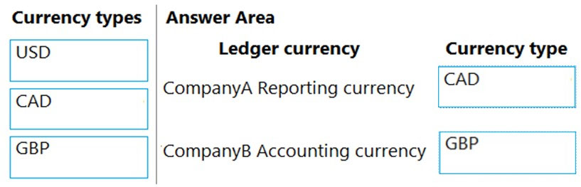
Let's break down this Dynamics 365 Finance scenario and figure out the right costing methods for your item model group.
The core of this question revolves around setting up an item model group in Dynamics 365 Finance, specifically focusing on the costing methods. You're aiming to link items to this group, and there's a key requirement: you don't want to deal with mandatory inventory closes. In essence, inventory close is a periodic process that settles inventory transactions and updates costs. Your goal is to bypass this, likely for simplicity or to avoid the time commitment it requires.
Now, the question asks us to match costing methods to specific system behaviors within Dynamics 365. We're given two behaviors and need to choose from four costing methods: Moving average, Weighted average, First in, first out (FIFO), and Standard cost. Each costing method has its own way of handling inventory valuation, which is essentially how the system calculates the value of your stock.
The first system behavior we need to consider is this: "The inventory unit cost must be based on an expected cost." This means you want to use a predefined cost to value your inventory, regardless of actual purchase prices. This is useful for planning and budgeting, as you have a clear idea of your inventory's worth even before you make any purchases.
The second behavior is: "The purchase cost changes but the inventory cost does not." Here, the focus is on maintaining a stable inventory cost even when the prices you pay for items fluctuate. This can simplify accounting and provide a more consistent view of your inventory's value.
With the question's requirements and context fully understood, let's now move on to selecting the appropriate costing methods.
For the first behavior, "The inventory unit cost must be based on an expected cost," the fitting costing method is Standard cost. This method involves setting a predetermined "standard" cost for each item. The system then uses this standard cost for all inventory transactions, regardless of the actual purchase price. This aligns perfectly with the need for an expected cost.
As for the second behavior, "The purchase cost changes but the inventory cost does not," the suitable choice is again Standard cost. Because the inventory cost is fixed at the standard cost, any variations in purchase prices won't impact the value assigned to the inventory. This is exactly what the behavior describes – a consistent inventory cost despite fluctuating purchase prices.
So, in a nutshell, for both system behaviors you've described, the Standard cost method in Dynamics 365 Finance is the way to go. It allows you to avoid mandatory inventory closes while maintaining a stable and predictable inventory valuation based on expected costs.
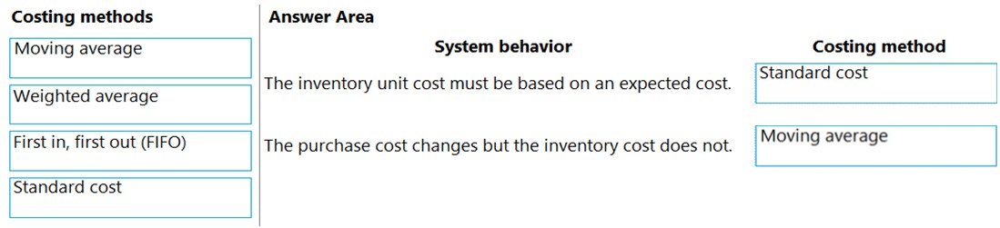
Okay, so we're diving into the world of Dynamics 365 Finance, specifically focusing on how to get a more precise cash flow forecast that takes sales tax into account. The question essentially boils down to this: how do we make sure our cash flow predictions accurately reflect the ebb and flow of money caused by sales tax, considering when these taxes are expected to be collected or paid?
We're looking for a setup within Dynamics 365 Finance that allows us to anticipate the impact of sales tax on our cash flow, and this anticipation needs to be based on two key factors: the estimated amounts of these transactions and, crucially, the dates when these amounts are expected to impact our cash flow. It is not just about knowing how much sales tax we'll be dealing with, but also when these amounts will affect our cash on hand. This is vital for a solid cash flow forecast because timing is everything when it comes to managing finances.
Let's quickly chat about the options provided and why they might or might not be relevant:
Considering what we need—a way to factor in the expected amounts and dates of sales tax transactions into our cash flow forecast—none of the options presented directly addresses this need. The most appropriate approach here would involve utilizing the "Liquidity Accounts" feature within the cash flow forecast setup in Dynamics 365 Finance.
Here's why: Liquidity accounts allow you to incorporate specific ledger accounts, like those used for sales tax, into your cash flow forecasts. You can associate a sales tax authority with these accounts, enabling the system to calculate the anticipated inflow and outflow of cash based on the due dates of sales tax payments and settlements. This method aligns perfectly with the requirement to base our sales tax calculations on expected transaction amounts and dates, providing a clearer and more accurate picture of how sales tax will impact our future cash position. By setting up liquidity accounts for sales tax, we can tell Dynamics 365 Finance to look at our sales tax ledger accounts and, based on the sales tax settlement periods and payment terms, predict when money will come in or go out due to sales tax.
So, while the provided options don't hit the mark, the functionality we need is actually embedded within the concept of liquidity accounts in Dynamics 365 Finance's cash flow forecasting tools. This approach allows for a nuanced forecast that reflects the real-world timing and amounts of sales tax transactions, helping us manage our cash flow more effectively.
Okay, so we're talking about dealing with customers who are a bit behind on their payments in Dynamics 365 Finance, and the goal is to keep a close eye on the whole collections process using something called the "Collections list page." The question is, what's the very first step you need to take before you can effectively use this list page to monitor collections?
Let's break down what this "Collections list page" likely is. In systems like Dynamics 365, a "list page" is basically a view or a screen that displays a list of records, in this case, probably related to collections activities. So, it's like your central hub for seeing which customers owe you money, what actions have been taken, and so on.
Now, the options provided suggest different preliminary steps. We have "set up customer groups," "set up customer pools," "update financials," and "age customer balances." To figure out the right one, we need to think about what's absolutely essential for tracking collections in the first place.
"Updating financials" seems a bit too broad. While it's important to have accurate financial data, it's not the specific first step needed for monitoring collections. We can rule that out for now.
"Setting up customer groups" might be useful for organizing customers in general, but it's not directly related to the collections process itself. It's more about broad categorization than tracking overdue payments.
"Aging customer balances" is definitely a key part of collections. This process categorizes outstanding invoices based on how long they've been overdue (e.g., 30 days, 60 days, 90 days). It helps prioritize which customers to focus on. However, is it the absolute first step?
That leaves us with "set up customer pools." Now, this sounds promising. In the context of Dynamics 365 Finance, customer pools are essentially filters or queries that define specific groups of customers based on certain criteria. For collections, these criteria would likely relate to delinquency, such as customers with overdue invoices or those exceeding a certain credit limit.
Think of it this way: before you can start monitoring collections, you need to define which customers you want to monitor. Customer pools do exactly that. They allow you to create dynamic lists of customers who meet your delinquency criteria, and these lists are what the Collections list page would use to display relevant information.
Therefore, the very first step you need to take is to set up customer pools. Once you have your customer pools defined, you can then proceed with aging customer balances within those pools, and finally, you'll have meaningful data to monitor on your Collections list page. It's like setting the stage before the show can begin.
Okay, let's break down this question about generating consolidated financial statements in Dynamics 365 Finance. It sounds like we're dealing with a scenario where an organization has multiple entities, all using the same chart of accounts and fiscal periods, which is a common setup for streamlined reporting. The goal is to create consolidated statements that show the financial position of the entire organization, not just individual entities. We're talking about pulling data from across different companies and even different financial dimensions within those companies, and then bringing it all together in a meaningful way using building block groups in the financial report designer.
The question specifically mentions building block groups. In Dynamics 365, these are essentially the components that make up a financial report. There are a few key ones here, row definitions, which define what accounts to include in the report, column definitions, which tell us how those amounts should be displayed for different periods or companies, and reporting trees, which structure the organization hierarchy and dictate which data gets pulled into the report. The question asks us to identify three actions from a list of five options, that are essential for successfully generating these consolidated statements.
Now, let's think about what we need to do to actually create a consolidated statement. First, we need a way to define what financial data to include, right? That means specifying which accounts from our chart of accounts should be part of the consolidation. Second, we need to define how this data will be displayed, particularly how it is divided and compared across different companies or reporting units. We're looking at the structure of the report here, both in terms of the accounts and the way they are organized in time or by company. And lastly, we need a mechanism to tell the system which companies or parts of the organization should be included in the consolidation. This is where the organization's structure and how it's set up in Dynamics 365 becomes crucial.
Given these considerations, let's figure out the solution. We need to include all the relevant accounts in our report, so creating a row definition that encompasses all appropriate accounts from all companies is a necessary step. This ensures that our report captures the complete financial picture across the organization.
Next, to properly structure our consolidated report, we need to tell the system how to organize the data across the different companies involved. This is where a reporting tree comes in. By creating a reporting tree with a node for each company, we can define the hierarchy and instruct the report designer which data to pull from each entity.
Finally, to display the data from each company distinctly within the consolidated report, we need to link our column definitions to the specific reporting units defined in the reporting tree. Using the Reporting Unit field in the column definition allows us to select the correct tree and then the specific reporting unit, such as a particular company, for each column. This way, each column will show the financial data for the corresponding company, neatly organized as defined by the reporting tree.
Therefore, the three actions that are part of the solution are creating a row definition that includes all appropriate accounts, creating a reporting tree with a node for each company, and using the Reporting Unit field to select the tree and reporting unit for each column. These three actions work together to define the data, structure, and organizational scope of the consolidated financial statement.
Okay, let's break down this question about account structures and financial dimensions. It seems like we're dealing with a scenario where a company wants to organize its financial data in a specific way, especially differentiating between balance sheet accounts and profit & loss accounts.
The core of the question revolves around understanding how this company wants to categorize and track its financial transactions. We see ranges of account numbers: 10000 to 39999 for balance sheet accounts and 40000 to 99999 for profit and loss accounts. This distinction is important because it tells us they want to analyze these two types of accounts differently.
Then there are these things called "dimensions" - Business unit, Department, Cost center, and Customer. Think of dimensions as different lenses through which you can view your financial data. For example, you might want to see your expenses (a profit and loss account) broken down by department, or your assets (a balance sheet account) by business unit.
The image also mentions an "advanced rule" about adding a Customer dimension specifically to profit and loss accounts. This means whenever they record a transaction related to income or expenses (accounts 40000 to 99999), they also want to tag it with a specific customer. This is probably for tracking which customers are bringing in the most revenue or maybe which customers are associated with specific costs.
Essentially, the question is testing our understanding of how these account ranges, dimensions, and the advanced rule work together to define the company's financial tracking system. We need to figure out what actions are necessary to post transactions and the minimum number of account structures needed based on the information provided.
Now, to address the questions directly based on the explanation:
For the first question, "Which action must you perform so that you can post transactions to profit and loss accounts?" - remember that profit and loss accounts (40000 to 99999) require a business unit, department, cost center, and customer due to the advanced rule. Therefore, to properly post a transaction to these accounts, you'd need to specify a business unit, department, cost center, and customer.
As for the second question, "What is the minimum number of account structures that the company must use?" - we know they want to treat balance sheet accounts and profit and loss accounts differently. The balance sheet accounts only need the business unit, while the profit and loss accounts require business unit, department, cost center, and customer. Since these requirements are different, the company needs at least two distinct account structures: one for the balance sheet accounts and another for the profit and loss accounts, to accommodate the different dimensions they want to track.
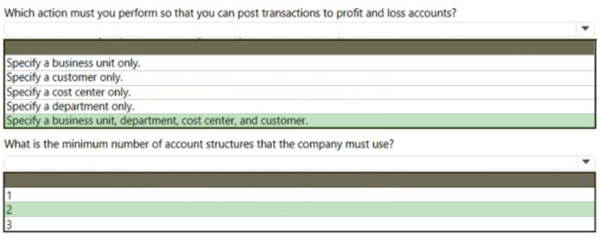
Let's break down this Dynamics 365 Finance question. It's essentially asking us to match specific client requirements for their general ledger module with the correct system capabilities within Dynamics 365. Think of it like a matching game where we need to pair the client's needs with the features Dynamics 365 offers.
The scenario involves a company with multiple legal entities, and they want to streamline their financial processes. They have five specific needs, ranging from intercompany transactions to year-end closing procedures. Each of these needs corresponds to a feature or setting in Dynamics 365 Finance.
Here's a closer look at what each requirement entails:
Now, let's look at the "System capability" side of things. Dynamics 365 Finance offers a range of features to handle these requirements. We need to figure out which feature best addresses each of the client's needs. The options given are:
Essentially, the question is testing our understanding of what each of these Dynamics 365 features does and how they relate to common accounting and financial management practices. The goal is to correctly link each client requirement to its corresponding system capability.
Now, let's dive into the answers, considering the breakdown we've discussed:
By matching these capabilities, we're effectively configuring the Dynamics 365 Finance system to meet the specific needs of the client, ensuring their financial processes are efficient and streamlined.
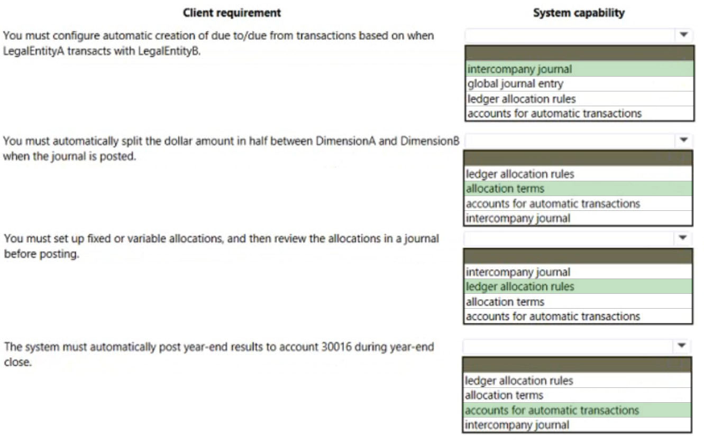
Okay, let's break down this Dynamics 365 Finance cost accounting scenario.
The question revolves around a customer who's implementing Dynamics 365 Finance and wants to leverage its cost accounting module. It seems like they have some specific requirements for how they want to track and manage their costs. The core of the question lies in figuring out which configuration options within the cost accounting module best align with these requirements.
The requirements themselves are quite straightforward:
Now, the question presents a series of configuration options within Dynamics 365 Finance, and the task is to match the correct option to each requirement. These options are likely different elements or dimensions within the cost accounting setup.
Let's look at the configuration options provided in the image:
For the first requirement, "Track square footage occupied at each location," we need a configuration option that allows us to define and track a quantity, like area, and associate it with different locations. Among the options, "Allocation base" seems like the most suitable choice. Allocation bases are often used to distribute costs based on a specific measure, such as square footage, machine hours, or headcount.
For the second requirement, "Track and categorize costs as primary or secondary," we need a configuration option that helps classify costs into these two categories. The option "Cost behavior" might seem relevant at first, but it typically deals with how costs change in response to activity levels (fixed, variable, etc.). Instead, "Cost element" appears to be the better fit here. Cost elements are used to categorize different types of costs, and we could potentially set up primary and secondary cost elements to achieve this requirement.
Finally, for the third requirement, "Classify costs as direct or indirect," we need a configuration option that deals with the traceability of costs. In the given options, "Cost classification by traceability" is the most direct match. This option explicitly addresses how costs are classified based on whether they can be directly traced to a cost object or not.
So, to summarize the answer in a clear and simple way:
To track square footage per location, the customer should use the "Allocation base" configuration option. To track and categorize costs as primary or secondary, they should use "Cost element." And to classify costs as direct or indirect, the "Cost classification by traceability" option is the right choice.
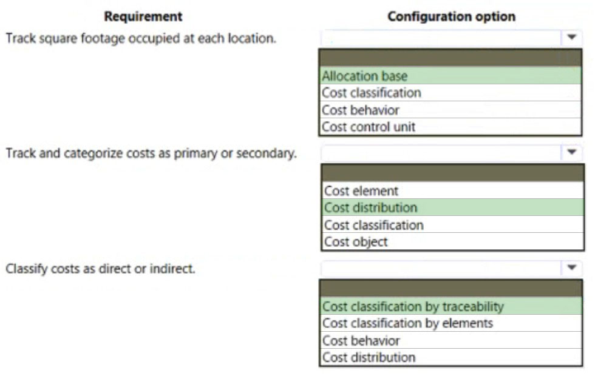
Okay, let's break down this Dynamics 365 Finance scenario step-by-step to understand what's going wrong and how to fix it.
The core of the issue is that transactions in foreign currencies (specifically Euros and US dollars) are failing to post during a specific period—March 1st to June 30th. We know that there's an exchange rate provider set up, and it's configured to use a fixed exchange rate for European Central Bank (ECB) holidays and during the period from April 1st to June 30th. This suggests that the problem might be related to how exchange rates are being handled, or perhaps how the system is set up to deal with specific dates or currencies.
Now, the question asks us to identify two configuration changes within the ledgers that would allow these transactions to post correctly. It's important to remember that ledgers in Dynamics 365 are essentially the backbone of the financial system, storing all the transaction data. So, any configuration changes here will directly impact how transactions are processed. The options are presented in the form of settings or keys we might adjust.
Let's think about what each option means in the context of the problem. Options like FloatCurrencies and BaseCurrency seem less relevant because they deal with floating currencies and defining the base currency. In this case, we're dealing with a fixed exchange rate during the critical period, so we can safely rule these out. The Import as of start date option is also unlikely because it only applies to initial imports, not regular transactions.
The issue likely revolves around the fact that the fixed exchange rate setup is somehow preventing transactions from being posted. The problem spans March, a month not explicitly covered by the fixed exchange rate configuration. Perhaps the system doesn't know what rate to apply. Also, since fixed rates are only meant for certain periods, maybe the system is getting stuck on days that should use dynamic rates but don't have them.
So, if we consider the problem lies with missing or misapplied exchange rates and how the system deals with holidays and special periods, two changes seem most logical. First, setting Create necessary currency pairs to True might help. This likely ensures that the system automatically generates the required exchange rate pairs (EUR/USD, USD/EUR) for all dates, including those in March where the rate might have been missing. Second, setting Prevent import on national holiday to True is probably incorrect. Instead we need to set this to False because we want transactions to post on national holidays, not be blocked.
Therefore, the two most fitting changes would be to ensure the system creates the necessary exchange rate pairs for all dates and to allow transactions to post even on national holidays, as they are not meant to be blocked. This will help ensure transactions are not prevented from posting.
Okay, let's break down this scenario and figure out the best way to set up this payment schedule.
The question is essentially about how to configure a system, likely a financial or accounting software, to handle a specific payment plan for a component used in manufacturing air filtering units. The component costs $25,000, but instead of paying it all at once, the company has negotiated a payment schedule.
Here's what we know about the payment plan:
So, the core of the question is about finding the right settings or options within the system to accurately reflect this specific payment arrangement. The options provided hint at features commonly found in such systems, like allocation methods, transaction amounts, and fixed quantity payments.
Now, let's consider what each of these terms means in this context:
Given the payment plan, we're looking for a method that allows for an initial, larger payment followed by three equal installments. Let's start by calculating what each of those three installments will be. We know that the remaining balance after the first payment of $10,000 is $15,000. To find the amount of each of the three equal payments, we simply divide $15,000 by 3. This gives us $5,000 per payment.
Now that we know the details of the payment schedule, let's address how to configure the system. The "Specified allocation method" isn't quite right because it doesn't capture the specifics of this payment plan. Entering $25,000 in the "Amount of Transaction Quantity field" is correct, as it reflects the total cost. However, specifying a "fixed quantity payment of 5" is incorrect as it does not align with the three-month payment plan, and our payments are not based on a quantity of 5.
The correct approach is to use the "Fixed allocation method" and set the "Fixed Amount" field for the monthly amount. Specifically, we'll need to enter $5,000 in this field. This tells the system that after the initial payment, there will be three subsequent payments of $5,000 each. This setup perfectly aligns with the negotiated payment schedule for the component. The system should also allow for the initial payment of $10,000 to be recorded separately, ensuring the entire payment plan is accurately reflected.